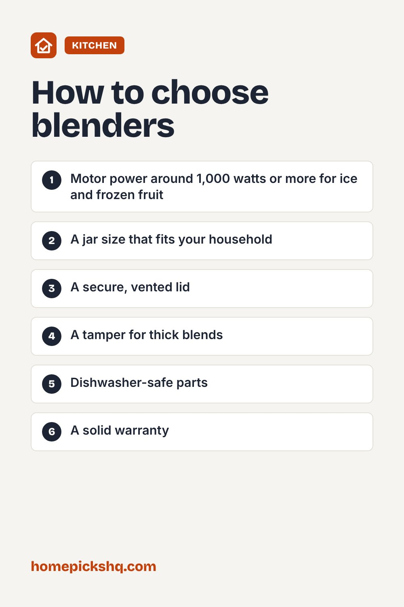

Best Blenders: How to Choose for Smoothies, Soups, and More

How we write these guides: we research manufacturer specifications, expert guidance, and owner feedback. We do not claim to have lab-tested every product. Links to Amazon on this page are affiliate links; see our disclosure.
Blenders range from small personal cups to powerful countertop machines. The right one depends on what you blend most. Smoothies with frozen fruit and ice need a stronger motor than sauces and soft ingredients. This guide covers what to look at before you buy.
Types of blenders
Countertop blenders have a large jar and are the most versatile. Personal blenders blend into a single-serve cup you can drink from, which is great for solo smoothies. Immersion (stick) blenders go into the pot and are ideal for soups and sauces with minimal cleanup.
Motor power
For frozen fruit and ice, look for roughly 1,000 watts or more. Lower-power models handle soft fruit, sauces, and dressings but can struggle with ice. Wattage is not the only factor, because blade shape and jar design affect performance too.
Jar material and size
Glass jars resist scratches and stains and do not hold odors, but they are heavier. BPA-free plastic jars are lighter and harder to break. Stainless steel is durable but you cannot see the contents. A 48 to 64 ounce jar suits families, while 20 to 32 ounces is enough for one or two people.
Blades and controls
Look for sturdy stainless steel blades and a pitcher shape that pulls food down toward the blades. A tamper helps with thick mixtures. Variable speed and a pulse button give more control than a single on/off setting.
Safety and cleaning
For hot soups, fill the jar no more than half way and use a vented lid so steam can escape. To clean, blend warm water with a drop of dish soap for 30 seconds, then rinse. Always unplug before removing the blades.
Quick buying checklist
- Motor power around 1,000 watts or more for ice and frozen fruit
- A jar size that fits your household
- A secure, vented lid
- A tamper for thick blends
- Dishwasher-safe parts
- A solid warranty
See blenders on AmazonUse the checklist above to compare options. As an Amazon Associate I earn from qualifying purchases.

Frequently asked questions
Can I blend hot liquids?
Yes with care. Fill the jar less than half full, vent the lid, and start on low.
Is a personal blender enough?
For single servings of smoothies, yes. For family batches or crushing ice regularly, a full-size blender is better.
Why does my smoothie have chunks?
Add liquid first, then soft ingredients, then frozen ones on top, and blend longer.